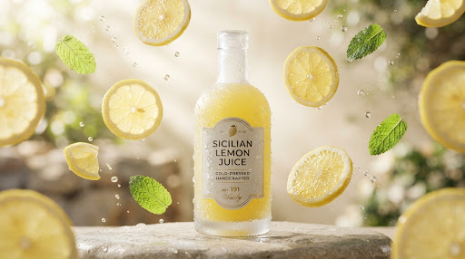
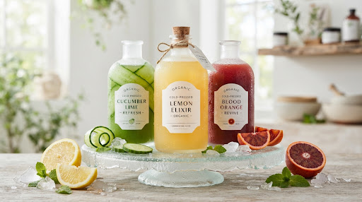

Pressed cold
No boiling. No concentrate. No flavor restored after processing.
34°F extractionPressed at 05:42 · Val di Noto
Sicilian citrus pressed within four hours of harvest, bottled cold, and delivered as a six flavor morning ritual.

Move to orbit the harvest
01 · THE ORIGIN
Fruit is clipped before the grove warms, pressed without heat, and sealed while its aroma is still bright.
02 · FLAVOR LAB
Each blend changes the ritual, color, and sensory profile. Select a bottle to transform the lab.

PRESS 01 · BATCH 049
Clean Sicilian lemon with bright peel oils, mineral spring water, and a dry finish.
Pour 120ml over one clear cube at sunrise. Finish with mineral water.
03 · NOTHING HIDDEN
Every claim is translated into something you can understand before a bottle reaches your crate.
No boiling. No concentrate. No flavor restored after processing.
34°F extractionFiltered through volcanic stone beneath the eastern Sicilian groves.
Etna aquiferNo refined sugar, synthetic citric acid, artificial color, or stabilizer.
100% fruit originHeavy flint bottles protect flavor without plastic touching the juice.
Reusable vessel04 · YOUR SIX BOTTLE FLIGHT
Choose six bottles. Mix bright mornings, cool resets, and slower evening pours.
Interactive concept. No payment is processed.
“
It tastes like someone captured the first ten minutes of a Sicilian morning.